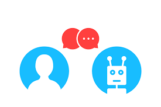

EARTHOSYS
Tsunami Warning and Predicting AI System
Earthosys - Tsunami Predicting and Warning AI System. To predict killer waves so called as Tsunami in advance and
report the details to the nearby coast incorporated with modern technologies such as IoT, Machine Learning, Cloud
Computing, ChatBots.
This project uses the modern machine learning models to predict the occurrence of killer waves, so called as 'Tsunami'
caused by Tsunamigenic earthquakes. It also uses the support of AI chatbot service to provide an appealing user
interaction with the trained machine learning model. Further, it utilizes the power of Cloud computing, IoT to
alert the nearby coast soon after a Tsunamigenic earthquake is triggered. The machine learning model which forms
the basis for the project uses the fundamental characteristics of an earthquake that can trigger tsunami such
as the magnitude, focal depth and the epicenter of the earthquake. This model can be used as an effective alternative
for AI Tsunami prediction method that uses Fuzzy logic. Future work includes optimization and improvements in
Tsunami prediction model to improve the accuracy achieved in predicting Tsunami.
Modules
ChatBot

Artificial agent that provide an appealing user interaction with the trained machine learning model.
Machine Learning Model

Machine Learning model is built on Support Vector Classification algorithm, which is trained with the historical tsunami
data from 2000 B.C to predict which earthquakes can cause tsunami and which does not.
IoT
To alert the nearby coast soon after a Tsunamigenic earthquake is triggered with the help of a raspberry pi device and Google
Text to Speech API.